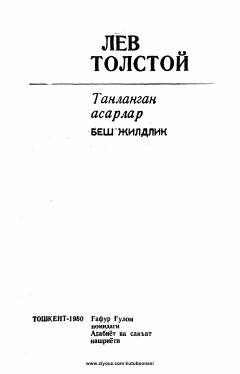

TALev Tolstoyning mashhur «Anna Karenina» romani kiritilgan tanlangan asarlarining to'rtinchi jildi.
Mazkur kitob buyuk rus yozuvchisi Lev Tolstoyning besh jildlik «Tanlangan asarlar» to'plamining to'rtinchi jildi bo'lib, unda Mirzakalon Ismoiliy tarjimasidagi mashhur «Anna Karenina» romani o'rin olgan. Asar oila, muhabbat, xiyonat va jamiyatdagi axloqiy muammolarni chuqur psixologik tahlil qiladi.